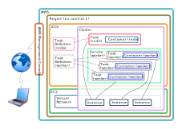

Implementation¶
To put all of this together into a working solution, in the rest of this tutorial, we're going to:
- Install some necessary software packages on our machine
- Build a Docker image which includes OMNeT++ and the worker code
- Deploy the system on AWS
- Run a simple simulation campaign with it using a custom client
- Take a look at all the code needed to perform the above
Before you begin, create a new empty folder. Later save all linked source files from this tutorial in that.
Solution Architecture¶
We will create the following architecture for running simulations on AWS:
We want to use Docker images for easy deployment, so we will use an ECS cluster. One container will run a Redis-based job queue, and others will be workers. The workers will need to run simulations, so their image will have OMNeT++ installed in addition to the RQ worker client. After the worker completes a simulation run, the results will be stored in the Redis database.
We will provide a custom tool that submits jobs to the job queue from the user's computer and downloads the results after simulation completion.
The final architecture will look like this:

In the following sections, we will show how to implement this architecture. We will discuss how to create the Docker images, how to configure the cluster, how to implement the worker and the end-user client and so on.
Preparation¶
First we need to install a few things on our computer.
OMNeT++¶
Download the archive from the official website. Then follow the Installation Guide.
The core version will work fine as well, if you don't need the IDE.
Docker¶
Follow the guides on the official website: for Ubuntu or for Fedora.
Note that even if your distribution has Docker in its own native package archive, it is most likely an outdated, and you will have to uninstall it first.
Python 3 and pip3¶
We will use Python version 3; and pip, which is the recommended tool for installing packages from the Python Package Index. Install these using the native package manager of your distribution.
On Ubuntu:
$ sudo apt install python3 python3-pip
On Fedora:
$ sudo dnf install python3 python3-pip
Then, in any case, upgrade pip:
$ sudo pip3 install --upgrade pip
Feel free to use a virtualenv for this instead of sudo if you're familiar
with the concept.
RQ¶
Use pip to install the RQ library:
$ sudo pip3 install rq
This will install the redis client module as well, as a dependency.
Getting the Code¶
Download the following files into the directory you just created:
- utils.py - Contains some common utilities used by both
worker.pyandclient.py. - worker.py - Contains the code to be executed by the workers as a job.
- Dockerfile - Is a recipe to build the Docker image for the workers.
- client.py - Is the client-side software to submit the simulations.
We will take a closer look at their contents in the "Examining the Code" chapter.
Building the Docker Image¶
Building the image is done by issuing the following command in the directory where the above files can be found:
$ docker build . -t worker
The Dockerfile is picked up automatically by name, the build context is the
current directory (.), and the resulting image will be named worker.
This will likely take a few minutes to complete. If you see a couple of warnings written in red, but the process continues, don't worry, this is expected.
Publishing¶
Now that we built our image for the worker nodes, we need to make it available for our AWS Instances by uploading it to Docker Hub.
First authenticate yourself (in case you haven't already) by typing in your Docker ID and password after running this command:
$ docker login
Now tag the image "into your repo", substituting your user name (Docker ID), so Docker knows where to push the image:
$ docker tag worker username/worker
And finally issue the actual push:
$ docker push username/worker
This will upload about 400-500 MB of data, so it can take a while. Once it's done, your image is available worldwide. You can see it appeared on Docker Hub. You may even get email notification if it was successful.